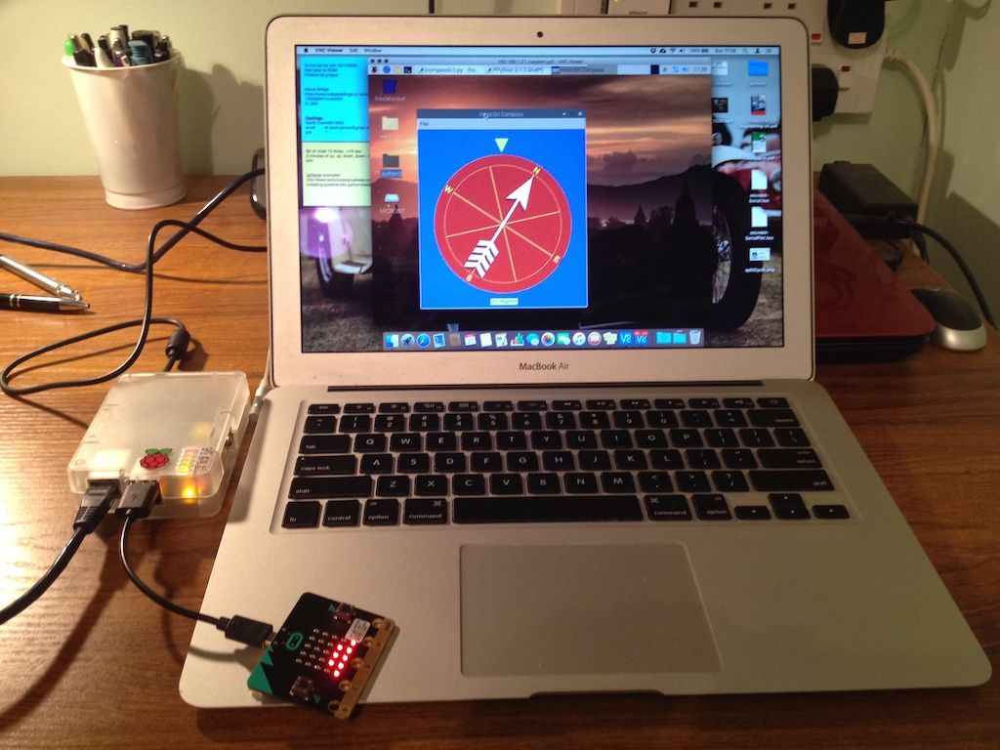

Making a Compass
I've made notes in my Notebook before about the Raspberry Pi computer and the BBC micro:bit (a very small computer). Well here is a little project that uses them both.
You know that you can make computers 'talk' to each other. You can send numbers from one computer to another via wifi or through a cable. I decided to make the micro:bit send numbers to the pi and for the pi to display those numbers. Now the micro:bit has several sensors. It can sense movement, how strong the light is and the earth's magnetic field. I wanted to send the direction of the earth's magnetic field from the micro:bit to the pi and for the pi to display it.
So I wrote a little program (in python) on the micro:bit to sent a number to the pi via a usb cable. You can see the small cable in the photo. I then wrote an app on the pi that displays a picture of a compass, but the pi's desktop is displayed on the MacBook.
If you run the short video you will see that as I rotate the micro:bit so the image of the compass on the screen moves. Making one computer 'talk' to another was easy, but writing the app to display the compass was difficult and I made many mistakes.